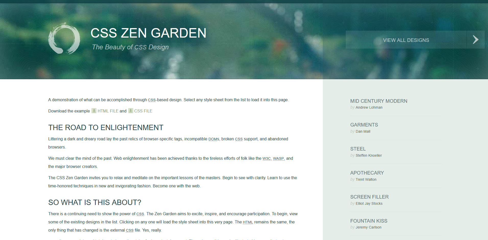

Accueil
Etudiant en BTS SIO - Option SISR
Bienvenue dans mon portfolio. Cette partie est encore en développement.
Formation
Mes formations...
Projets Scolaire
Teck sio
Le projet consister a amenager des locaux a partir d'un cahier des charge.
Portfolio Sampaio Xavier | Détails Teck SIO×
Contexte
Conception des locaux de l’entreprise TechSIO en respectant un budget raisonnable.
Objectif
Réaliser un cahier des charges comprenant : une salle de réunion, une salle technique, une salle de repos, un bureau secrétaire, un bureau directeur et un open space.
Point de réalisation
Planification des espaces, du réseau et du budget en fonction des contraintes du cahier des charges.
Difficultés
Répartition des tâches au sein de l’équipe et coordination du travail.
Competence :
Travailler en mode projet
GSB
Dans le contexte GSB, j'ai du monter un reseau WAN/LAN/DMZ. Le projet permet le deployement de service de redondance, Monitoring, Windows server, Ticketing
Portfolio Sampaio Xavier | Détails AP GSB×
Date de realisation: 08/09/25 08/12/25
plan du projet

Contexte
Mise en place d’une infrastructure réseau WAN/LAN/DMZ avec des règles de sécurité, dans le cadre du projet GSB.
Objectif
Concevoir et déployer une architecture réseau fonctionnelle et sécurisée basée sur le contexte GSB.
Point de réalisation
LAN : Windows Server 2019 (DNS, Active Directory, DHCP), OCS et GLPI.
DMZ : HAProxy, Checkmk (monitoring), serveur web.
Routage et sécurité assurés via IPFire.
Difficultés
Configuration et communication entre les différentes zones (LAN/DMZ), gestion des règles de sécurité et mise en place des services réseau.
Competence :
Répondre aux incidents et aux demandes d'assistance et d'évolution
Gérer le patrimoine Informatique
Organiser son dÈveloppement professionnel
Mettre à disposition des utilisateurs un service informatique

Zengarden
Un projet dans le but de decouvrir le css
LienPortfolio Sampaio Xavier | Détails CSS Zengarden×
Date de realisation: 07/11/25 19/12/25

Contexte :
Le projet Zengarden vise à apprendre le CSS en séparant le fond (HTML) et la forme (CSS), afin de transformer visuellement une même structure.
Objectif :
Créer une version personnalisée du site uniquement en CSS, avec une identité visuelle unique tout en respectant le HTML imposé.
Point de réalisation :
Plus de 300 lignes de CSS ont permis d’utiliser flexbox, grid et divers effets visuels, en assurant cohérence graphique et lisibilité.
Difficultés :
Trouver un thème cohérent et gérer certaines contraintes CSS, notamment le responsive et les layouts complexes.
Competence :
Developper la presence en ligne de l'organisation
Organiser son developpement professionnel

Portfolio
Portfolio interactif inspiré d’un terminal Linux, permettant de naviguer dans mes projets à travers une interface originale et immersive.
Portfolio Sampaio Xavier | Détails du portfolio×
Date de réalisation : 09/02/26 - Aujourd'hui

Contexte :
Ce projet de portfolio a pour but de montrer mon intérêt pour Linux et de présenter mes projets.
Objectif :
Créer un portfolio interactif et original, inspiré d’un environnement en ligne de commande, afin de proposer une expérience utilisateur différente et démontrer mes compétences en développement web.
Points de réalisation :
Plus de 550 lignes de CSS, 1000 lignes de JavaScript et 1000 lignes de HTML pour un système entièrement simulé.
Difficultés :
La mise en place du système de fichiers simulé (arbre en JavaScript), la gestion globale du portfolio (initialement pensé en ligne de commande), et le respect des bonnes pratiques de développement en partant de zéro.
Compétences :
Développer la présence en ligne d’une organisation
Organiser son développement professionnel

Routeur Diy :
D'un raspberry pi 5 a un routeur sous ubuntu LTS 26.04
Portfolio Sampaio Xavier | Routeur×
- Avoir un appareil avec au moins 2 port RJ45 (je passe par un raspberry avec un hats)
- Etre motivé car faut comprendre iptables/nftables
1. Autoriser le routage
net.ipv4.ip_forward = 1 //dans le /etc/sysctl.conf
par défaut le net.ipv4.ip_forward est a 0
2. Trouver les interfaces
ip a
Les interfaces sont generalement ensXX ethX enxX
3. Iptables ou Nftables
Sur Ubuntu LTS 24/26, nftables est le successeur moderne d’iptables : il unifie IPv4/IPv6, simplifie la syntaxe et améliore la performance et la gestion des règles. iptables reste surtout présent pour la compatibilité, souvent via une couche de traduction, donc les anciennes commandes peuvent encore fonctionner. (pour mon plus grand desarois, je me suis rendu compte que c'etais nftables apres 10h de recherche). PS: voir documentation pour fonctionnment Iptables Nftables
4. Rendre les règles permanentes
# pour iptables utiliser -A pour rendre persistent (penser a installer iptables-persistent)
nft -f /etc/nftables.conf # pour nftables
Penser a mettre en place un dhcp
Faire un acces internet secursé :
Accès web via vps/wireguard/Ha Proxy (en cours de realisation)
Portfolio Sampaio Xavier | VPS/HA×
NAS Perso :
Nas a 3 disques en raid 5 Nextcloud en app + Repository linux pour distribution (en cours de realisation)
Portfolio Sampaio Xavier | NAS×
Documentation
Parce qu'on ne peut pas tout retenir, je documente ici chaque étape de mes projets système. Cet onglet me sert de base de connaissances pour reproduire mes environnements de travail.
-
Monitoring disques
-
Cron
-
SSH connexion
-
Fail2Ban
-
DNS Registrar(prochainement)
-
DNS domaine(prochainement)
-
DNS Local (pihole) (prochainement)
-
Ha Proxy | Bases (prochainement)
-
Ha Proxy | Avancé (prochainement)
-
Apache2 (prochainement)
-
Mdadm (prochainement)
-
Repos Linux (prochainement)
-
RouteurPi5 (en cours)
Surveillance de disque
1. Installer l'outils :
# Debian/Ubuntu : apt install smartmontools
# RHEL/CentOS : dnf install smartmontools
# Arch : pacman -S smartmontools
2. Vérification manuelle de la santé :
sudo smartctl -H /dev/sda
Chercher la ligne : "SMART overall-health self-assessment test result: PASSED"
3. Script de monitoring global :
# Récupérer la santé globale
health=$(smartctl -H /dev/sda | grep "test result" | awk '{print $6}')
# Récupérer la température
temp=$(smartctl -A /dev/sda | grep "Temperature_Celsius" | awk '{print $10}')
Pour surveiller en temps réel (toutes les 5s) :
watch -n 5 './check-disk-temp.sh'
Automatisation avec Cron
1. Installation et activation :
sudo apt install cron
sudo systemctl enable --now cron
2. Comprendre la syntaxe (Les 5 étoiles) :
* * * * * commande
│ │ │ │ │
│ │ │ │ └── Jour de la semaine (0-6)
│ │ │ └──── Mois (1-12)
│ │ └────── Jour du mois (1-31)
│ └──────── Heure (0-23)
└────────── Minute (0-59)
3. Script de sauvegarde (Tous les dimanches à 3h) :
0 3 * * 0 /home/adm-nc/rsync.sh >> /var/log/repo-sync.log 2>&1
Note : "2>&1" redirige les erreurs (stderr) vers le même fichier que les logs standards (stdout).
crontab -e
Éditer vos tâches
crontab -l
Lister vos tâches
Connexion SSH via Clé & Alias
1. Générer la paire de clés (ED25519) :
ssh-keygen -t ed25519 -C "votre_email@exemple.com"
Le commentaire peut etre sous n'importe quel forme
2. Envoyer la clé sur le serveur :
ssh-copy-id -i ~/.ssh/id_ed25519.pub user@ip_du_serveur
3. Configurer l'alias (~/.ssh/config) :
Host nas
HostName ip_du_nas
User votre_utilisateur
IdentityFile ~/.ssh/id_ed25519Succès : Désormais, tapez simplement ssh nas
Fail2Ban : Protection contre les intrusions
Surveille les logs système et bannit les IPs suspectes via le pare-feu.
1. Configuration SSH (/etc/fail2ban/jail.local)
[sshd] enabled = true port = ssh filter = sshd logpath = /var/log/auth.log maxretry = 3 bantime = 1h ignoreip = 127.0.0.1/8 192.168.1.0/24
2. Cas d'usages avancés
HA Proxy
Bannit les IPs qui génèrent trop d'erreurs HTTP 404 ou 403 (scanners de vulnérabilités).
3. Commandes d'administration
fail2ban-client status sshd
Voir les IPs
bannies
fail2ban-client set sshd unbanip <IP>
Débannir une IP
Attention : Toujours ajouter votre IP dans
ignoreip pour éviter de vous auto-bannir par erreur
lors de tests !
registrar
registrar
DNS server
dns Local
ha base
ha adv
apache2
Raid
Rep
Montage de Mon Raspberry PI en tant que routeur
J'ai un routeur un peu special ce n'est ni unifi ou cisco ou hp. c'est ... Ubuntu LTS 26.04 sur un raspberry pi. j'ai un hats qui est le suivant :

Contact
Xavier Sampaio
Développeur & Sysadmin